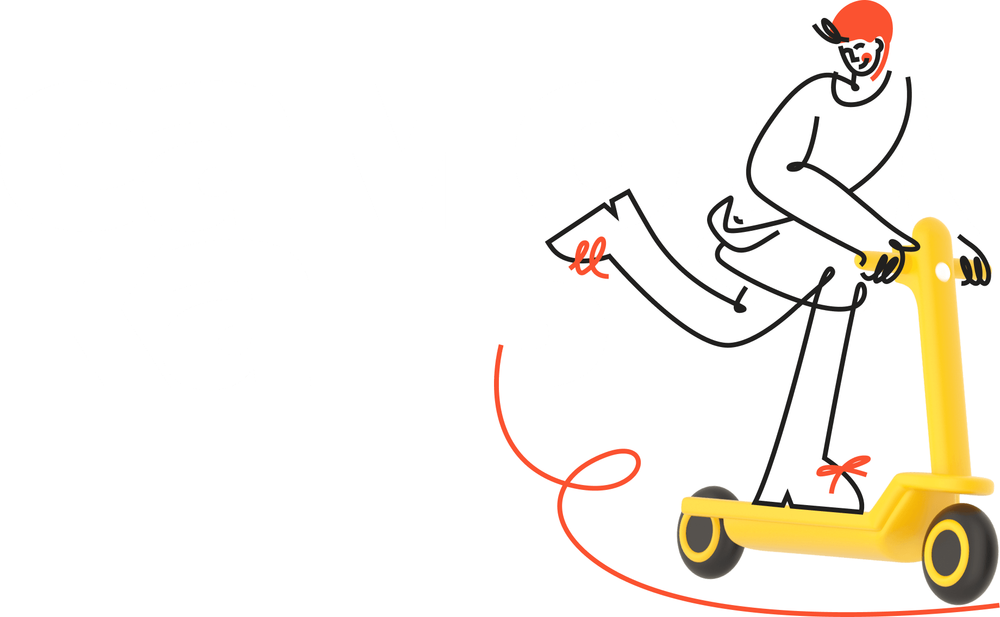
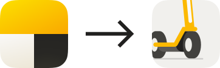
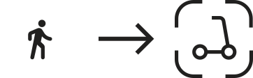
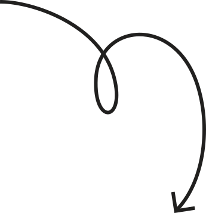
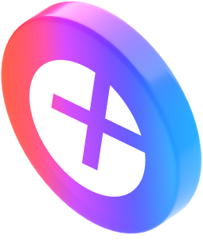
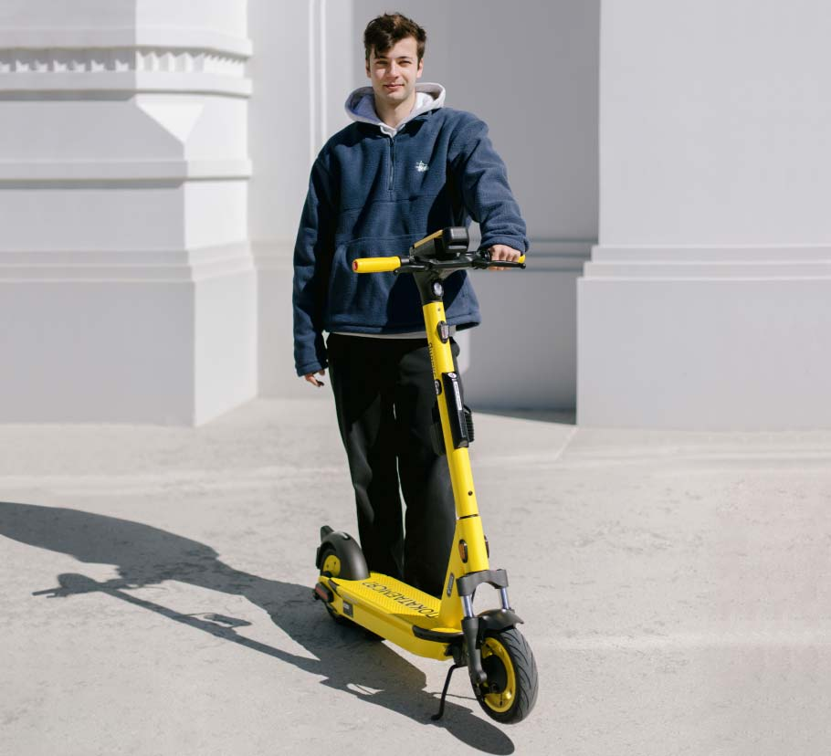

Скачайте приложение,
чтобы арендовать
ближайший электросамокат
Как арендовать самокат

В Яндекс Go нажмите кнопку Самокаты
Найдите на карте ближайшую парковку

Дойдите до самоката и отсканируйте QR-код на руле

Готово! Выбирайте тариф и можно ехать

Тариф Фикс
Подойдет, если знаете точку назначения. Цена поездки фиксированная. Покажем её заранее.
Тариф Поминутный
Для прогулок по городу.
Аренда: от 50 рублей + тариф
от 7 рублей в минуту
Опция «Ещё один самокат»
Нужна, чтобы забронировать с одного телефона до трёх самокатов одновременно. Да, и такое бывает
Катайтесь с Плюсом

Вернем 5% кешбэка баллами Плюса за каждую поездку. Кешбэк можно тратить в сервисах Яндекса
На чём едем?
Ninebot Max Plus 2022 года выпуска. Красив и функционален. На его борту есть держатель для телефона с беспроводной зарядкой.
За 30 минут поездки зарядим ваш девайс на 40%
